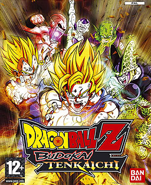
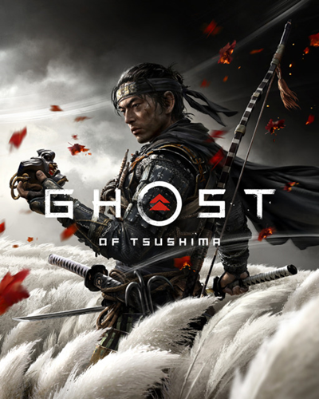

.png)
Uma jornada épica através dos meus mundos virtuais preferidos, com reviews.
🎮 Gênero: RPG de Ação · Mundo Aberto
Um RPG de ação em mundo aberto que vai muito além de caçar monstros. Você vive a jornada de Geralt de Rívia em meio a guerras, intrigas políticas e escolhas morais que realmente importam. Cada decisão pode mudar o rumo da história, tornando a busca por Ciri apenas uma parte de uma narrativa muito maior e inesquecível.

🎮 Gênero: Ação-Aventura · Mundo Aberto
Uma história intensa sobre redenção no Velho Oeste, onde você acompanha John Marston em uma jornada forçada contra seu próprio passado. Com clima melancólico e narrativa envolvente, o jogo entrega um dos finais mais marcantes dos videogames.

🎮 Gênero: RPG · Mundo Aberto
Um RPG que te dá liberdade total para ser quem quiser. Como Dragonborn, você pode seguir a história principal ou simplesmente se perder explorando cavernas, cidades e segredos por centenas de horas. Mais do que um jogo, é uma experiência de exploração sem limites — cheia de momentos únicos (e até bugs inesquecíveis).

🎮 Gênero: Action RPG · Souls-like
Uma experiência brutal e fascinante, onde o combate agressivo recompensa coragem em vez de cautela. Em meio à cidade de Yharnam, o horror começa gótico e evolui para algo muito mais perturbador e cósmico. Cada chefe, cada área e cada descoberta contribuem para uma atmosfera única e inesquecível.

🎮 Gênero: Ação-Aventura · Mundo Aberto
Uma obra-prima que mistura narrativa profunda com um dos mundos abertos mais vivos já criados. Na pele de Arthur Morgan, você presencia a queda de uma era enquanto suas escolhas moldam não só o personagem, mas também como o mundo reage a ele. O nível de detalhe e imersão é simplesmente absurdo.

🎮 Gênero: Ação-Aventura · Mundo Aberto
Um jogo único que transforma a rotina escolar em um verdadeiro mundo aberto cheio de caos e humor. Controlando Jimmy Hopkins, você enfrenta valentões, participa de aulas e cria sua própria reputação dentro da escola. É irreverente, divertido e surpreendentemente profundo.
.webp)
🎮 Gênero: Luta · Arena 3D
Um dos jogos que melhor captura a essência de Dragon Ball. As lutas em arenas 3D dão liberdade total de movimento, permitindo voar, destruir cenários e recriar batalhas épicas do anime. Com um elenco enorme de personagens, é puro caos e nostalgia para os fãs.

🎮 Gênero: Ação-Aventura · Mundo Aberto
Uma jornada visualmente deslumbrante sobre honra, sacrifício e transformação. Como Jin Sakai, você precisa decidir entre seguir o código samurai ou se adaptar para sobreviver. A exploração fluida e a direção artística tornam cada momento quase cinematográfico.

Página 1 de 2 Próxima Página →